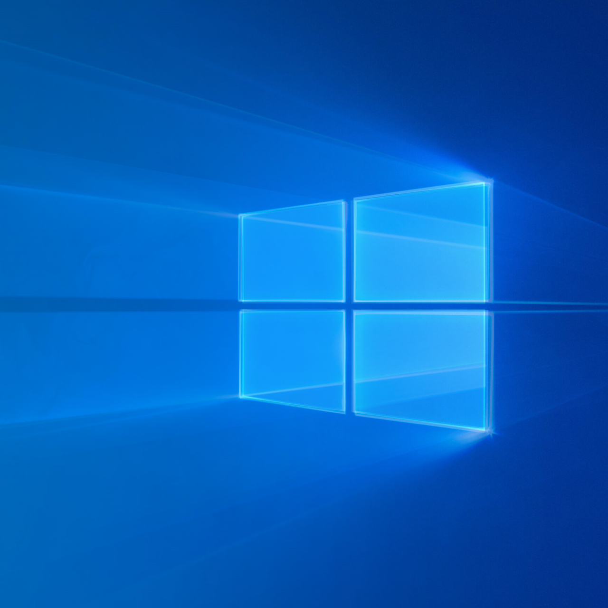
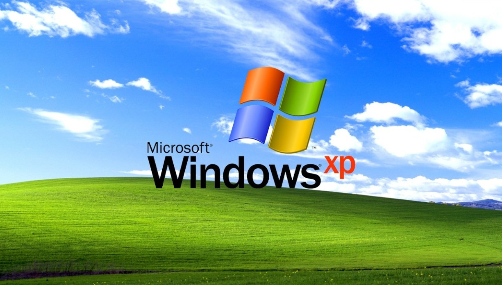
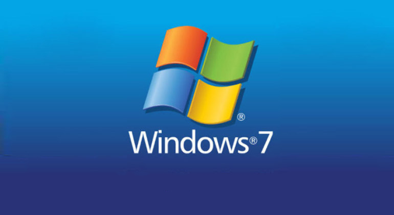
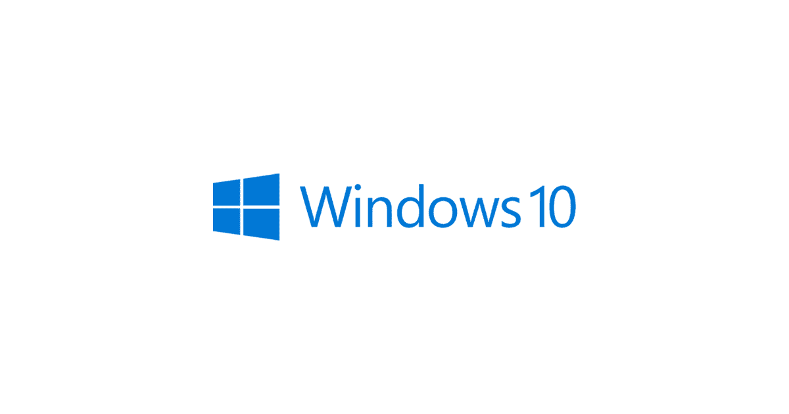
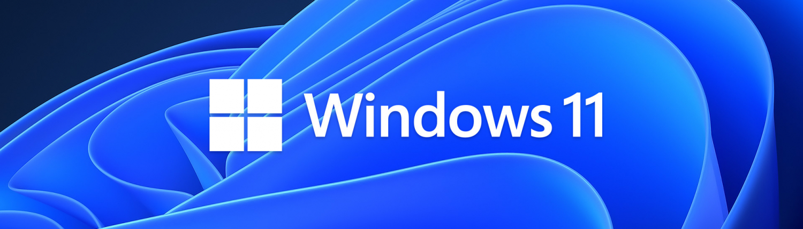

Descubre la evolución de Windows, sus versiones más importantes y sus requisitos mínimos.
Historia de WindowsWindows es una familia de sistemas operativos desarrollada por Microsoft desde 1985. Creado como una interfaz gráfica para MS-DOS, Windows ha evolucionado hasta convertirse en uno de los sistemas operativos más usados en el mundo, presente en millones de dispositivos personales y de empresas. La facilidad de uso y la compatibilidad de Windows han hecho que sea la elección preferida para usuarios domésticos, profesionales y corporativos. Desde Windows 95 hasta Windows 11, el sistema ha pasado por importantes cambios en diseño, funcionalidad y seguridad.  |
Versiones Principales de WindowsMicrosoft ha lanzado muchas versiones de Windows para mejorar la experiencia del usuario y adaptarse a las nuevas tecnologías. Cada versión ha introducido cambios, como la mejora de la interfaz gráfica de usuario o la integración de nuevas funcionalidades. Windows es el sistema operativo de Microsoft y es el estándar para las computadoras domésticas y de negocios |
Windows XPWindows XP fue lanzado en 2001 y es recordado por su estabilidad y facilidad de uso. Su interfaz gráfica y funcionalidad mejorada lo hicieron popular en hogares y oficinas. Requisitos Mínimos:
 |
Windows 7Windows 7 se lanzó en 2009 y fue una de las versiones más populares debido a su rendimiento y diseño intuitivo. Ofrecía mejoras de seguridad y soporte para hardware moderno. Requisitos Mínimos:
 |
Windows 10Windows 10, lanzado en 2015, introdujo el asistente virtual Cortana y una interfaz unificada para dispositivos de escritorio y móviles. Aún sigue siendo una de las versiones más usadas. Requisitos Mínimos:
 |
Windows 11Windows 11 es la versión más reciente, lanzada en 2021. Con un diseño visual renovado y una mayor integración con aplicaciones de Android, Windows 11 está diseñado para una experiencia moderna y optimizada. Requisitos Mínimos:
 |